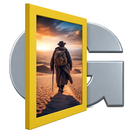

Личный некоммерческий проект — готовит фотографии для Travel Globe. Работает полностью локально: фото не покидают компьютер, нет рекламы и сбора данных.
Эта страница полностью сгенерирована ИИ-помощником Claude.
Больше — на канале Gregory Flow.
Сделано на основе открытых инструментов: OpenCV.js (поиск линий горизонта), File System Access API, шрифт — Google Fonts (Poppins).